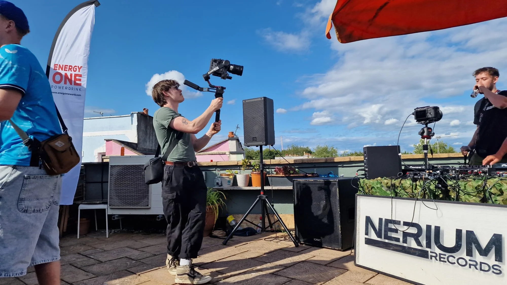
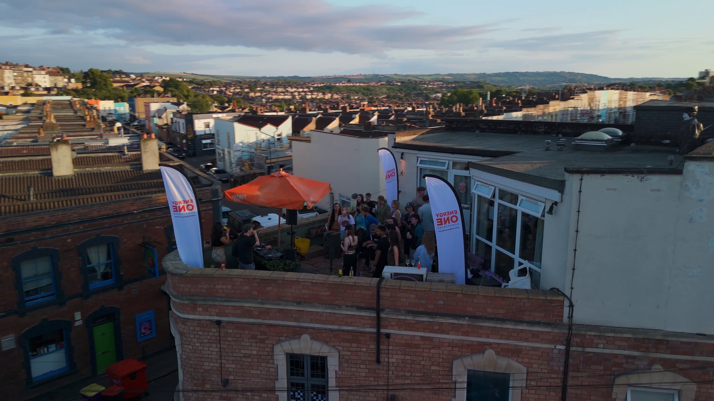
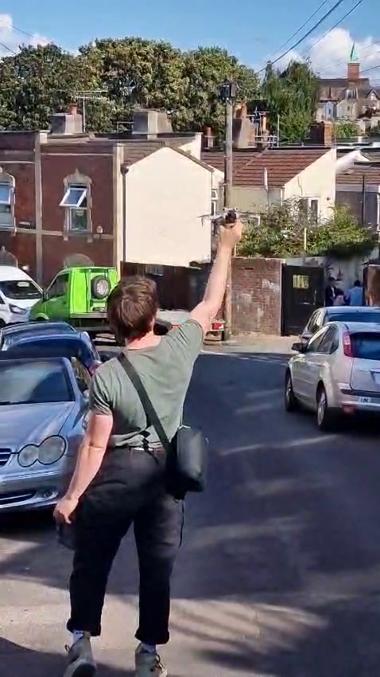
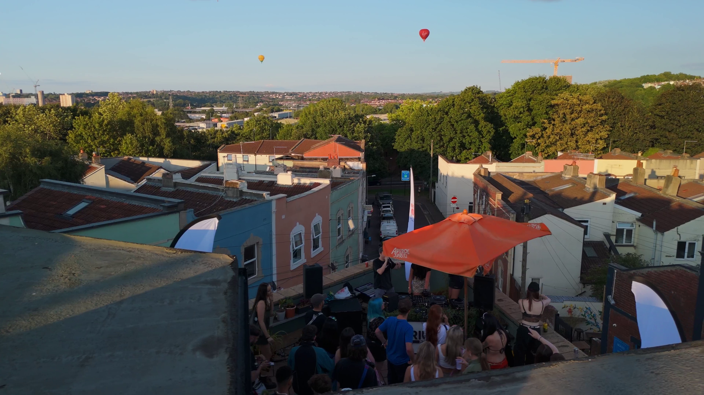

Nerium Records
Terrace Party
Commissioned by Nerium Records, an independent label based in Bristol, the Nerium Terrace Party was an eflectrifying event featuring five live DJ sets. As the Technical Lead, I spearheaded the coordination and execution of a dynamic multi-camera setup to capture the energy and atmosphere of the night.
The setup featured an FX3 strategically mounted to the decks, offering immersive close-up views of the DJs' performances. An FX6, stabilized on an RS3 gimbal, roamed through the crowd, delivering fluid, intimate shots that conveyed the vibrancy of the event. To complete the visual experience, aerial footage from a DJI Mavic Mini 4 Pro provided stunning perspectives of the terrace and the lively crowd below.



